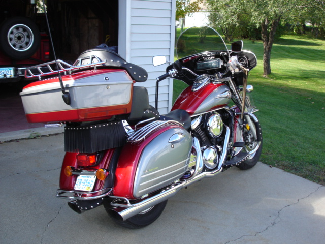

This is a 2000 Kawasaki 1500 Nomad L1, I bought this in Tennessee in the fall of 2006. I added some "extras", as well as re-painted the fairing and trunk. The fairing is from a FLH, and the trunk is also compliments Harley.